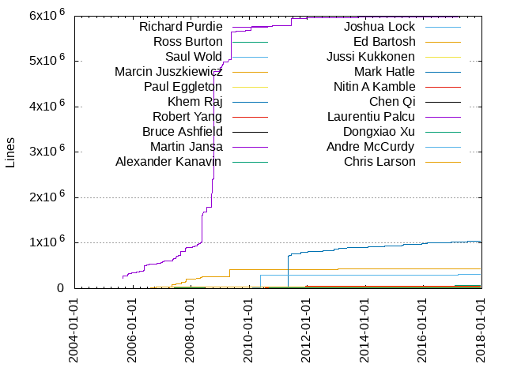
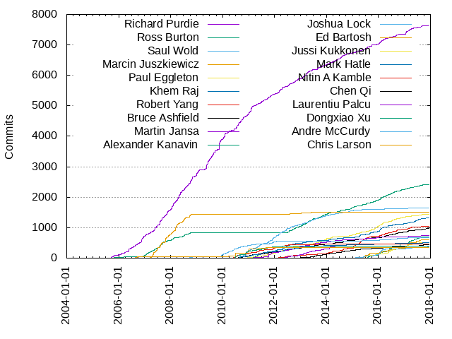

Authors
| Author | Commits (%) | + lines | - lines | First commit | Last commit | Age | Active days | # by commits |
|---|
| Richard Purdie | 7643 (20.08%) | 5993184 | 6411416 | 2005-08-31 | 2017-12-09 | 4483 days, 2:12:19 | 1822 | 1 |
| Ross Burton | 2417 (6.35%) | 64895 | 192716 | 2005-09-02 | 2017-11-07 | 4448 days, 23:24:18 | 937 | 2 |
| Saul Wold | 1657 (4.35%) | 34464 | 87864 | 2010-06-04 | 2017-11-21 | 2726 days, 16:03:07 | 614 | 3 |
| Marcin Juszkiewicz | 1497 (3.93%) | 426908 | 154127 | 2007-02-07 | 2013-05-31 | 2304 days, 23:54:59 | 283 | 4 |
| Paul Eggleton | 1440 (3.78%) | 38831 | 69706 | 2010-11-17 | 2017-11-12 | 2552 days, 10:22:38 | 481 | 5 |
| Khem Raj | 1315 (3.46%) | 1039421 | 937158 | 2010-01-22 | 2017-12-06 | 2874 days, 7:54:02 | 552 | 6 |
| Robert Yang | 1051 (2.76%) | 25331 | 33799 | 2011-05-11 | 2017-11-10 | 2375 days, 6:40:44 | 385 | 7 |
| Bruce Ashfield | 964 (2.53%) | 11909 | 10082 | 2010-06-18 | 2017-11-02 | 2694 days, 21:41:07 | 478 | 8 |
| Martin Jansa | 735 (1.93%) | 25155 | 11763 | 2010-01-21 | 2017-09-11 | 2790 days, 7:34:56 | 357 | 9 |
| Alexander Kanavin | 703 (1.85%) | 14306 | 59086 | 2015-05-18 | 2017-11-14 | 910 days, 23:59:07 | 175 | 10 |
| Joshua Lock | 680 (1.79%) | 304514 | 44869 | 2008-06-26 | 2017-09-21 | 3373 days, 19:51:03 | 292 | 11 |
| Ed Bartosh | 604 (1.59%) | 9608 | 13130 | 2014-08-29 | 2017-09-06 | 1103 days, 18:31:00 | 174 | 12 |
| Jussi Kukkonen | 511 (1.34%) | 10788 | 14852 | 2015-03-13 | 2017-09-04 | 905 days, 19:50:07 | 170 | 13 |
| Mark Hatle | 500 (1.31%) | 24219 | 8538 | 2010-07-20 | 2017-09-13 | 2612 days, 2:42:56 | 231 | 14 |
| Nitin A Kamble | 461 (1.21%) | 55772 | 226560 | 2010-05-11 | 2014-09-30 | 1602 days, 22:14:26 | 200 | 15 |
| Chen Qi | 435 (1.14%) | 7962 | 7992 | 2012-11-01 | 2017-11-07 | 1832 days, 18:46:06 | 242 | 16 |
| Laurentiu Palcu | 394 (1.04%) | 8387 | 6025 | 2012-05-16 | 2014-05-12 | 726 days, 0:41:13 | 138 | 17 |
| Dongxiao Xu | 385 (1.01%) | 16140 | 6641 | 2010-06-08 | 2012-05-08 | 699 days, 20:18:57 | 135 | 18 |
| Andre McCurdy | 361 (0.95%) | 4023 | 4410 | 2013-07-29 | 2017-11-14 | 1569 days, 9:39:40 | 151 | 19 |
| Chris Larson | 339 (0.89%) | 43437 | 7136 | 2006-07-13 | 2011-11-16 | 1952 days, 11:04:00 | 146 | 20 |
These didn't make it to the top: Dexuan Cui, Maxin B. John, Otavio Salvador, Markus Lehtonen, Hongxu Jia, Christopher Larson, Cristian Iorga, Zhai Edwin, Scott Rifenbark, Scott Garman, Darren Hart, Aníbal Limón, Yu Ke, Qing He, Koen Kooi, Tom Zanussi, Patrick Ohly, Kevin Tian, Peter Kjellerstedt, Mariano Lopez, Marko Lindqvist, Jackie Huang, Constantin Musca, Phil Blundell, Kai Kang, Armin Kuster, Andreas Oberritter, Mei Lei, Kang Kai, Jonathan Liu, Samuel Ortiz, Ming Liu, Stefan Stanacar, Shane Wang, Matthew Allum, Juro Bystricky, Chris Lord, Leonardo Sandoval, André Draszik, Alejandro Hernandez, Roy Li, Xiaofeng Yan, Lianhao Lu, Chong Lu, Andreas Müller, Robert Bradford, Joe Slater, Huang Qiyu, Tomas Frydrych, Wenzong Fan, Matthew McClintock, Tom Rini, Randy Witt, Bogdan Marinescu, Dmitry Eremin-Solenikov, Andrei Gherzan, Radu Moisan, Robert P. J. Day, Marek Vasut, Jason Wessel, Bernhard Reutner-Fischer, Mike Crowe, Nathan Rossi, Paul Barker, Roy.Li, Yi Zhao, Lucian Musat, Maciej Borzecki, Carlos Rafael Giani, Peter Seebach, Yue Tao, Richard Tollerton, Kumar Gala, Anders Darander, Denys Dmytriyenko, Corneliu Stoicescu, Zubair Lutfullah Kakakhel, Gary Thomas, Cristiana Voicu, Tanu Kaskinen, Robert Bragg, Enrico Scholz, Dengke Du, Peter A. Bigot, Ionut Radu, Fan Xin, Matt Madison, Valentin Popa, Andrei Dinu, Fabio Berton, Rob Bradford, Ioan-Adrian Ratiu, Elizabeth Flanagan, Muhammad Shakeel, Daniel Istrate, Amarnath Valluri, Alexandru DAMIAN, Richard Purdie, Jiajun Xu, Drew Moseley, David Nyström, Matthieu Crapet, Dan McGregor, Paul Gortmaker, Mikko Rapeli, Jingdong Lu, Eric Bénard, Jeff Dike, Holger Freyther, Fathi Boudra, Enric Balletbo i Serra, Ulf Magnusson, Petter Mabäcker, Ting Liu, Tim Orling, Stefan Müller-Klieser, Jesse Zhang, Javier Martinez Canillas, Beth Flanagan, Edwin Plauchu, California Sullivan, Andrea Adami, Zhenhua Luo, Yuqing Zhu, Ricardo Ribalda Delgado, Nicolas Dechesne, Nathan Lynch, Li Zhou, Li Wang, João Henrique Ferreira de Freitas, Stephano Cetola, Alexandre Belloni, Mike Looijmans, Mihai Prica, Jessica Zhang, Damien Lespiau, Tudor Florea, Jukka Rissanen, Ilya Yanok, Björn Stenberg, Andrej Valek, Trevor Woerner, Jose Perez Carranza, Awais Belal, Alejandro del Castillo, Philip Balister, Jack Mitchell, Costin Constantin, brian avery, Yuanjie Huang, George McCollister, Bill Randle, Alex Franco, Zhixiong Chi, Ola x Nilsson, Jose Lamego, Humberto Ibarra, Emilia Ciobanu, Randy MacLeod, Fahad Usman, Dodji Seketeli, Alexandru Palalau, Marc Ferland, Lukas Bulwahn, Jens Rehsack, Chang Rebecca Swee Fun, Adrian Alonso, Xin Ouyang, Tom Hochstein, Morgan Little, Mikko Ylinen, Max Eliaser, Holger Hans Peter Freyther, Felipe F. Tonello, Dominic Sacré, David Vincent, Benjamin Esquivel, sweeaun, Yasir-Khan, Thomas Wood, Max Krummenacher, Mark Asselstine, Jorn Baayen, Jeff Polk, Francisco Pedraza, Chunrong Guo, Choong YinThong, Carlos Alberto Lopez Perez, yanjun.zhu, Vladimir Zapolskiy, Steve Sakoman, Mihai Lindner, Liping Ke, Jianxun Zhang, He Zhe, Andy Ross, Wang Zidan, Roxana Ciobanu, Riku Voipio, Pascal Bach, Mingli Yu, Mike Turquette, Jacob Kroon, Henning Heinold, Dmitry Rozhkov, Chase Maupin, Bian Naimeng, Tyler Hall, Tobias Henkel, Sona Sarmadi, Ricardo Neri, Olof Johansson, Noor Ahsan, Jérémy Rosen, Jian Liu, James Limbouris, Jagadeesh Krishnanjanappa, Colin Walters, Catalin Enache, Brendan Le Foll, Baogen Shang, Zheng Ruoqin, Yao Zhao, Stefan Agner, Qiang Chen, Peng Li, Martin Kelly, Li xin, Kristian Amlie, Junling Zheng, Joe MacDonald, Javier Viguera, Elliot Smith, Belen Barros Pena, Alistair Francis, Wenlin Kang, Shan Hai, Qi.Chen@windriver.com, Olaf Mandel, Mikhail Durnev, Martin Ertsaas, Lu Chong, Konrad Scherer, Esben Haabendal, Denis Carikli, Dai Caiyun, Amy Fong, Zhenbo Gao, Tobias Hagelborn, Stefan Herbrechtsmeier, Simon Busch, Serhii Popovych, Samuel Stirtzel, Michael Wood, Maxin John, Mario Domenech Goulart, Liming Wang, Lei Liu, Kevin Strasser, Ken Werner, Joshua Watt, Jeffrey C Honig, Jair Gonzalez, Ismo Puustinen, Florin Sarbu, Erik Botö, Diego Rondini, Denis 'GNUtoo' Carikli, Daniel Schultz, Daniel Díaz, Christopher Clark, Ben Shelton, Alexander D. Kanevskiy, leimaohui, bavery, Zhang Xiao, Yannick Gicquel, Wang Xin, Vivian Zhang, Stefan Christ, Shiqun Lin, Ruslan Bilovol, Peter Tworek, Peter Marko, Paul Woegerer, Noor, Ng, Wei Tee, Martin Donnelly, Marko Katic, Marius Avram, Lei Maohui, Laszlo Papp, Krishnanjanappa, Jagadeesh, Julian Pidancet, Haris Okanovic, H.J. Lu, Enrico Jorns, Dennis.Yxun, Daniel Stone, Cody P Schafer, Changhyeok Bae, Bryan Evenson, Bob Foerster, Andrew Shadura, Anders Roxell, Alexandru-Cezar Sardan, mingli.yu@windriver.com, mike.looijmans@topic.nl, Zumeng Chen, Yeoh Ee Peng, Yang Shi, Xu Li, Wolfgang Denk, Wade Farnsworth, Veerabrahmam vr, Tzu-Jung Lee, Tomas Novotny, Steffen Sledz, Song.Li, Samuli Piippo, Romain Perier, Rob Woolley, Reinette Chatre, Pau Espin Pedrol, Patrick Williams, Ovidiu Panait, Oleksandr Kravchuk, Nikolay Merinov, Mihaly Varga, Michael Lippautz, MiLo, Lauri Hintsala, Lauren Post, Kyle Russell, Kevin Hao, Jose Alarcon, Jeremy Puhlman, Irina Patru, Herve Jourdain, Fabrice Coulon, Dennis Lan, Davis, Michael, Andrew Gabbasov, Alex deVries, Alejandro Joya, zjh, zhengrq, yzhu1, Zidan Wang, Zhangle Yang, Xufeng Zhang, Venkata ramana gollamudi, Upgrade Helper, Thomas Perrot, Sébastien Mennetrier, Sujith H, Soren Brinkmann, Shrikant Bobade, Rogerio Nunes, Richard Griffiths, Raymond Danks, Pushpal Sidhu, Prabhu Sundararaj, Philip Tricca, Peter Urbanec, Ooi Cinly, Olivier Guiter, Noor, Ahsan, Matt Fleming, Martin Hundebøll, Linus Wallgren, Lans Zhang, Krzysztof Sywula, Klauer, Daniel, Ken Sharp, Jun Zhu, Jun Zhang, Juan M Cruz Alcaraz, Josh Cartwright, Ionut Chisanovici, Ian.Arkver, Ian Reinhart Geiser, Henry Bruce, Haiqing Bai, Graeme Gregory, Gary S. Robertson, Frans Meulenbroeks, Flanagan, Elizabeth, Erkka Kääriä, Dmitry Cherukhin, Derek Straka, Dave Lerner, Daniel Lazzari, Cliff Brake, Clemens Lang, Bruno Bottazzini, Bob Cochran, Bernhard Guillon, Ash Charles, Andy Voltz, Andrzej Zaborowski, Andrew Bradford, Andrea Galbusera, Anas Nashif, Alex J Lennon, yadi.hu@windriver.com, wenzong.fan@windriver.com, austin, Zhong Hongbo, Zheng Junling, Yong Zhang, Yevhen Kyriukha, Yao Xinpan, Vishal Bhoj, Victor Kamensky, Vesa Jääskeläinen, Valentin Cobelea, Urs Fässler, Todor Minchev, Tobias Olausson, Timo Mueller, Stephen Arnold, Stanley Phoong, Sipke Vriend, Simone Agresta, Sebastian Wiegand, Sebastian Krzyszkowiak, Rusty Lynch, Raymond Tan, Radek Dostál, Radek Dostal, Peter Saunderson, Paul Menzel, Nobuhiro Iwamatsu, Nick D'Ademo, Ng, Mei Yeen, Ng Wei Tee, Muzaffar Mahmood, Moritz Blume, Mihaela Sendrea, Michel Thebeau, Michael Jones, Mats Kärrman, Mans Rullgard, Manjukumar Matha, Maciej Pijanowski, Lukasz Nowak, Luca Ceresoli, Liang Li, Li Zhijian, Li Xin, Leonid Borisenko, Leon Woestenberg, Klaus Kurzmann, Karl Hiramoto, José Bollo, Joseph A. Lutz, Jonas Eriksson, Johannes Pointner, Johan Hovold, Joao Henrique Ferreira de Freitas, Jim Somerville, Jianchuan Wang, Jeremy Stashluk, Jean-Francois Dagenais, Javier Martin, Jate Sujjavanich, Jan Luebbe, Jan Kiszka, J. Aaron Gamble, Ian Holmes, Hu Yadi, Helio Chissini de Castro, Hans Beckerus, Guillem Jover, Gratian Crisan, Giuseppe CONDORELLI, Gilbert Coville, Gernot Hillier, Gan, Yau Wai, Galen Wetterling, Gabriel Barbu, Franklin S. Cooper Jr, Franklin S Cooper Jr, Fabien Proriol, Evade Flow, Eric BENARD, Daniel McGregor, Daniel Lublin, Daniel BORNAZ, Daiane Angolini, Cyril Humbert, Cristina Agurida, Cornel Stoicescu, Ciprian Ciubotariu, Christian Ziethén, Bob Ham, Anibal Limon, Andreas Mueller, Andreas J. Reichel, Alexandru Moise, Ajay M, Abdur Rehman, Øyvind Kolås, Øystein Walle, victor, tprrt, susanbian, noel eck, ngutzmann, mykhani, meta-luv, lumag, liangcao, jani.uusi-rantala@nokia.com, farrah rashid, fan.xin, bmouring@ni.com, baali, andreas.kling@peiker-cee.de, Zongchun Yu, Zawadzki, Krzysztof (Nokia - PL/Wroclaw), Yen-Chin Lee, Yauhen Kharuzhy, Wills Wang, Will Newton, Víctor Enríquez, Vincent Génieux, Umut Tezduyar Lindskog, Ulrich Ölmann, Tristan Van Berkom, Topi Kuutela, Tomasz Meresiński, Tobias Blom, Ting Wang, Thomas Witt, Thomas Kristensen, Thomas Fitzsimmons, Theodore A. Roth, Theodor Gherzan, Tasslehoff Kjappfot, Takeshi Hamasaki, T.O. Radzy Radzykewycz, Søren Holm, Sören Brinkmann, Sven Ebenfeld, Sujith Haridasan, Steffen Pankratz, Stefan Wiehler, Stefan Strogin, Stefan Seefeld, Stefan Schmidt, Stefan Eichenberger, Stanley Cheong Kwan, Phoong, Stan Hu, Shen Joon Tan, Seth Bollinger, Sergey Matyukevich, Scott Ellis, Scot Salmon, Sander van Grieken, Ryan Phillips, Roxana, Ronan Le Martret, Roman I Khimov, Rodrigo Chiossi, Robert Schuster, Robert Joslyn, Robert Berger, Rob Braford, Rick Altherr, Richard Röjfors, Richard Leitner, Rich Dubielzig, Ricardo Salveti, Ramax Lo, Radu Patriu, Quanyang Wang, Qian Lei, Puustinen, Ismo, Pranav Tipnis, Philippe Coval, Phil Staub, Petter Mabacker, Petr Štetiar, Peter Zhu, Peter Griffin, Peter Chubb, Peter Bergin, Pengyu Ma, Pavel Modilaynen, Paul Barrette, Patrick Vacek, Patrice B, Panagiotis Tamtamis, Ovidiu Vancea, Oliver Stäbler, Ola Redell, Nikunj Kela, Nicolas Guyomard, Nick Leverton, Mylène Josserand, Muhammad Tauqir Ahmad, Morten Minde Neergaard, Mihail Stanciu, Michaël Burtin, Michael Thalmeier, Michael Halstead, Michael Gloff, Michael Brown, Merten Sach, Mehaffey, John, Maxime Roussin-Bélanger, Mattias Waldo, Matthias Schiffer, Matthew Campbell, Matt Cowell, Mathieu Desnoyers, Martyn Welch, Martin Vuille, Martin Borg, Martin Balik, Marko, Peter, Marko Katić, Mark O'Donovan, Mark Norman, Marie Kowalczyk, Marcus Müller, Marco Trillo, Marco Cavallini, Marc Reilly, Manuel Huber, Malcolm Crossley, Magnus Olsson, Luck Hoang, Lu Jingdong, Linus Svensson, Lin Tong, Liam R. Howlett, Lei Yang, Lee Nipper, Leandro Dorileo, Kévin THIERRY, Kyle Farnsworth, Kristof Robot, Kevron Rees, Kevin Baker, Kenneth Solbjerg, Kartik Mohta, Justin Capella, Junchun Guan, Jukka Laitinen, Josua Mayer, Josep Puigdemont, Jose Pardeiro, Jonathan Santos, Jonathan David, Jonas Danielsson, Joel Fernandes, Joe Sauer, Joe Konno, Jochen Jaegers, Jiang Lu, Jiajie Hu, Jia Zhang, Jeff Wang, Jeff Lance, Jeff Johnson, Jean-Michel Hautbois, Jean-François Dagenais, Jean-Benoit MARTIN, Jan Wetter, Jan Sarenik, Jan Remmet, James Minor, Ioana Grigoropol, Inaky Perez-Gonzalez, In Long, Ihar Hrachyshka, Igor Stoppa, Igor Romanov, Ian Ray, Herb Kuta, Gustavo Sverzut Barbieri, Guojian Zhou, Gianfranco Costamagna, Gerson Fernando Budke, George Nita, George Kiagiadakis, Freudiger Raphael, Florian Wickert, Florian Boor, Fang Jia, Fahad Arslan, Fabien Chereau, Ezra Savard, Esquivel, Benjamin, Eric Nelson, Eren Türkay, Elvis Dowson, Elizabeth 'pidge' Flanagan, Donn Seeley, Dominique Hunziker, Dominik Holland, Dmitriy Falko, Dike, Jeffrey G, Derek Buitenhuis, Denys Zagorui, Dennis Meier, David Reyna, Dariusz Pelowski, Daniela Plascencia, Daniel Nilsson, Daniel Dragomir, Dan Dedrick, Dalon Westergreen, Cristian Ciupitu, Craig McQueen, Cosmin Paraschiv, Connor Abbott, Ciobanu Roxana, Chuang Dong, Christophe Guillon, Christoph Settgast, Christian Schuler, Christian Glindkamp, Christian Ege, Chris Trobridge, Chris Patterson, Chris Hallinan, Chris Elston, Chris Austen, Chin Huat Ang, Chang, Rebecca Swee Fun, Carl Simonson, Caner Altinbasak, C Michael Sundius, Brian Lloyd, Brad Bishop, Bogdan-Alexandru Voiculescu, Bogdan Purcareata, Blair Elliott, Bjørn Forsman, Binghua Guan, Bill Pittman, Bian Yaqin, Bhuvanchandra DV, Barros Pena, Belen, Baptiste DURAND, Athanasios Oikonomou, Artur Mądrzak, Arnold Csorvasi, Aristov Maxim, Arindam Nath, Anuj Mittal, Aneesh Bansal, Andy Kling, Andy Dalton, Andrey Belous, Andrew McDermott, Andrew Goodbody, Andrew F. Davis, Andreea Proca, Andreas Horsthemke, Anatolij Gustschin, Allen Wild, Alexandru.Vaduva, Alexandru Georgescu, Alexandra Safta, Alexander Kanevskiy, Alex Olson, Alessio Igor Bogani, Adrian Freihofer, Adrian Dudau, Adrian Calianu, Adrian
Only top 20 authors shown
Only top 20 authors shown
| Month | Author | Commits (%) | Next top 5 | Number of authors |
|---|
| 2017-12 | Richard Purdie | 3 (50.00% of 6) | Otavio Salvador, Matt Madison, Khem Raj | 4 |
| 2017-11 | Richard Purdie | 18 (25.00% of 72) | Bruce Ashfield, Andre McCurdy, Ross Burton, Erik Botö, Paul Eggleton | 27 |
| 2017-10 | Juro Bystricky | 10 (12.50% of 80) | Khem Raj, Ross Burton, Andre McCurdy, Nikolay Merinov, Alexander Kanavin | 32 |
| 2017-09 | Huang Qiyu | 43 (13.52% of 318) | Matt Madison, Ross Burton, Otavio Salvador, Markus Lehtonen, Ed Bartosh | 72 |
| 2017-08 | Alexander Kanavin | 32 (8.67% of 369) | Juro Bystricky, Richard Purdie, Paul Eggleton, Khem Raj, Robert Yang | 75 |
| 2017-07 | Ed Bartosh | 31 (9.90% of 313) | Khem Raj, Mikko Rapeli, Ross Burton, Richard Purdie, Jussi Kukkonen | 63 |
| 2017-06 | Khem Raj | 40 (10.67% of 375) | Ed Bartosh, Alexander Kanavin, Ross Burton, Richard Purdie, Aníbal Limón | 69 |
| 2017-05 | Aníbal Limón | 28 (11.76% of 238) | Alexander Kanavin, Maxin B. John, Khem Raj, Leonardo Sandoval, Jussi Kukkonen | 59 |
| 2017-04 | Alexander Kanavin | 32 (9.67% of 331) | Robert Yang, Khem Raj, Richard Purdie, Paul Eggleton, Markus Lehtonen | 66 |
| 2017-03 | Richard Purdie | 60 (14.67% of 409) | Ed Bartosh, Alexander Kanavin, Khem Raj, Ross Burton, Jussi Kukkonen | 68 |
| 2017-02 | Ed Bartosh | 64 (15.72% of 407) | Alexander Kanavin, Richard Purdie, Jussi Kukkonen, Robert Yang, Bruce Ashfield | 74 |
| 2017-01 | Richard Purdie | 72 (16.86% of 427) | Ed Bartosh, Jussi Kukkonen, Ross Burton, Patrick Ohly, Markus Lehtonen | 67 |
| 2016-12 | Paul Eggleton | 27 (8.16% of 331) | Alexander Kanavin, Khem Raj, Jussi Kukkonen, Bruce Ashfield, Ed Bartosh | 66 |
| 2016-11 | Ross Burton | 28 (8.89% of 315) | Aníbal Limón, Zubair Lutfullah Kakakhel, Alexander Kanavin, Fabio Berton, Andreas Oberritter | 65 |
| 2016-10 | Jussi Kukkonen | 43 (14.78% of 291) | Alexander Kanavin, Ross Burton, Paul Eggleton, Bruce Ashfield, Ed Bartosh | 56 |
| 2016-09 | Richard Purdie | 42 (10.77% of 390) | Markus Lehtonen, Alexander Kanavin, Joshua Lock, Ulf Magnusson, Robert Yang | 70 |
| 2016-08 | Markus Lehtonen | 42 (10.24% of 410) | Alexander Kanavin, Richard Purdie, Ross Burton, Robert Yang, Jackie Huang | 81 |
| 2016-07 | Maxin B. John | 38 (10.61% of 358) | Ross Burton, Robert Yang, Paul Eggleton, Jussi Kukkonen, Khem Raj | 58 |
| 2016-06 | Alexander Kanavin | 78 (20.05% of 389) | Ross Burton, Richard Purdie, Markus Lehtonen, Paul Eggleton, Jussi Kukkonen | 56 |
| 2016-05 | Jussi Kukkonen | 43 (10.00% of 430) | Khem Raj, Richard Purdie, Ed Bartosh, Maxin B. John, Peter Kjellerstedt | 62 |
| 2016-04 | Ross Burton | 47 (13.13% of 358) | Robert Yang, Jussi Kukkonen, Bruce Ashfield, Richard Purdie, Ed Bartosh | 67 |
| 2016-03 | Richard Purdie | 39 (9.90% of 394) | Paul Eggleton, Alexander Kanavin, Ross Burton, Khem Raj, Bruce Ashfield | 68 |
| 2016-02 | Andre McCurdy | 66 (11.89% of 555) | Richard Purdie, Ross Burton, Paul Eggleton, Khem Raj, Alexander Kanavin | 76 |
| 2016-01 | Andre McCurdy | 80 (14.81% of 540) | Khem Raj, Richard Purdie, Paul Eggleton, Alexander Kanavin, Ross Burton | 63 |
| 2015-12 | Alexander Kanavin | 53 (16.83% of 315) | Paul Eggleton, Khem Raj, Richard Purdie, Andre McCurdy, Ross Burton | 59 |
| 2015-11 | Jussi Kukkonen | 41 (13.14% of 312) | Ross Burton, Paul Eggleton, Maxin B. John, Christopher Larson, Khem Raj | 64 |
| 2015-10 | Paul Eggleton | 36 (13.85% of 260) | Ross Burton, Andre McCurdy, Khem Raj, Robert Yang, Richard Purdie | 58 |
| 2015-09 | Richard Purdie | 48 (11.54% of 416) | Paul Eggleton, Khem Raj, Ed Bartosh, Alexander Kanavin, Robert Yang | 71 |
| 2015-08 | Ed Bartosh | 41 (11.45% of 358) | Khem Raj, Jussi Kukkonen, Alexander Kanavin, Richard Purdie, Paul Eggleton | 60 |
| 2015-07 | Richard Purdie | 52 (13.65% of 381) | Robert Yang, Ross Burton, Andre McCurdy, Paul Eggleton, Christopher Larson | 70 |
| 2015-06 | Ed Bartosh | 67 (19.14% of 350) | Robert Yang, Richard Purdie, Alexander Kanavin, Andre McCurdy, Ross Burton | 56 |
| 2015-05 | Robert Yang | 32 (11.07% of 289) | Ross Burton, Richard Purdie, Jussi Kukkonen, Paul Eggleton, Markus Lehtonen | 52 |
| 2015-04 | Robert Yang | 73 (19.68% of 371) | Khem Raj, Paul Eggleton, Ed Bartosh, Richard Purdie, Jussi Kukkonen | 59 |
| 2015-03 | Robert Yang | 26 (10.53% of 247) | Paul Eggleton, Richard Purdie, Andreas Oberritter, Ross Burton, Patrick Ohly | 56 |
| 2015-02 | Paul Eggleton | 32 (12.36% of 259) | Richard Purdie, Robert Yang, Ross Burton, Khem Raj, Saul Wold | 52 |
| 2015-01 | Robert Yang | 103 (35.89% of 287) | Paul Eggleton, Ross Burton, Richard Purdie, Hongxu Jia, Saul Wold | 62 |
| 2014-12 | Ross Burton | 62 (22.55% of 275) | Paul Eggleton, Richard Purdie, Saul Wold, Chen Qi, Kai Kang | 50 |
| 2014-11 | Saul Wold | 25 (14.37% of 174) | Richard Purdie, Hongxu Jia, Peter A. Bigot, Chong Lu, Ross Burton | 50 |
| 2014-10 | Richard Purdie | 26 (15.38% of 169) | Hongxu Jia, Bruce Ashfield, Robert Yang, Chong Lu, Tom Zanussi | 56 |
| 2014-09 | Chen Qi | 31 (13.03% of 238) | Richard Purdie, Bruce Ashfield, Robert Yang, Ross Burton, Chong Lu | 57 |
| 2014-08 | Richard Purdie | 55 (13.00% of 423) | Robert Yang, Tom Zanussi, Martin Jansa, Khem Raj, Cristian Iorga | 69 |
| 2014-07 | Richard Purdie | 56 (15.77% of 355) | Ross Burton, Hongxu Jia, Tom Zanussi, Saul Wold, Robert Yang | 60 |
| 2014-06 | Richard Purdie | 30 (13.33% of 225) | Saul Wold, Ross Burton, Chen Qi, Cristian Iorga, Corneliu Stoicescu | 52 |
| 2014-05 | Richard Purdie | 40 (16.19% of 247) | Ross Burton, Khem Raj, Petter Mabäcker, Paul Eggleton, Chen Qi | 54 |
| 2014-04 | Richard Purdie | 25 (11.01% of 227) | Yue Tao, Saul Wold, Martin Jansa, Laurentiu Palcu, Cristian Iorga | 50 |
| 2014-03 | Robert Yang | 44 (12.15% of 362) | Richard Purdie, Bruce Ashfield, Paul Eggleton, Laurentiu Palcu, Khem Raj | 72 |
| 2014-02 | Laurentiu Palcu | 33 (11.74% of 281) | Richard Purdie, Paul Eggleton, Cristian Iorga, Saul Wold, Khem Raj | 51 |
| 2014-01 | Ross Burton | 28 (8.56% of 327) | Laurentiu Palcu, Richard Purdie, Chen Qi, Martin Jansa, Hongxu Jia | 64 |
| 2013-12 | Paul Eggleton | 64 (21.55% of 297) | Ross Burton, Richard Purdie, Saul Wold, Robert Yang, Martin Jansa | 48 |
| 2013-11 | Richard Purdie | 32 (9.97% of 321) | Ross Burton, Paul Eggleton, Laurentiu Palcu, Saul Wold, Peter Kjellerstedt | 70 |
| 2013-10 | Ross Burton | 27 (9.57% of 282) | Saul Wold, Richard Purdie, Laurentiu Palcu, Tom Zanussi, Martin Jansa | 62 |
| 2013-09 | Ross Burton | 46 (15.65% of 294) | Richard Purdie, Paul Eggleton, Saul Wold, Bruce Ashfield, Laurentiu Palcu | 53 |
| 2013-08 | Richard Purdie | 39 (11.24% of 347) | Saul Wold, Chen Qi, Paul Eggleton, Cristian Iorga, Stefan Stanacar | 55 |
| 2013-07 | Saul Wold | 37 (11.28% of 328) | Martin Jansa, Laurentiu Palcu, Chen Qi, Paul Eggleton, Ionut Radu | 67 |
| 2013-06 | Richard Purdie | 34 (10.56% of 322) | Ross Burton, Saul Wold, Jonathan Liu, Paul Eggleton, Chen Qi | 50 |
| 2013-05 | Ross Burton | 41 (11.82% of 347) | Richard Purdie, Saul Wold, Jonathan Liu, Laurentiu Palcu, Bogdan Marinescu | 52 |
| 2013-04 | Ross Burton | 48 (14.20% of 338) | Richard Purdie, Paul Eggleton, Saul Wold, Laurentiu Palcu, Phil Blundell | 58 |
| 2013-03 | Richard Purdie | 96 (24.74% of 388) | Ross Burton, Khem Raj, Martin Jansa, Radu Moisan, Laurentiu Palcu | 55 |
| 2013-02 | Richard Purdie | 58 (15.34% of 378) | Ross Burton, Laurentiu Palcu, Constantin Musca, Saul Wold, Marko Lindqvist | 61 |
| 2013-01 | Marko Lindqvist | 64 (15.13% of 423) | Richard Purdie, Ross Burton, Khem Raj, Saul Wold, Constantin Musca | 62 |
| 2012-12 | Constantin Musca | 47 (15.93% of 295) | Ross Burton, Saul Wold, Laurentiu Palcu, Martin Jansa, Marko Lindqvist | 51 |
| 2012-11 | Richard Purdie | 53 (19.92% of 266) | Saul Wold, Ross Burton, Laurentiu Palcu, Marko Lindqvist, Martin Jansa | 45 |
| 2012-10 | Richard Purdie | 58 (25.00% of 232) | Ross Burton, Saul Wold, Robert Yang, Phil Blundell, Martin Jansa | 42 |
| 2012-09 | Ross Burton | 42 (11.70% of 359) | Martin Jansa, Paul Eggleton, Phil Blundell, Khem Raj, Richard Purdie | 44 |
| 2012-08 | Richard Purdie | 45 (13.27% of 339) | Paul Eggleton, Constantin Musca, Khem Raj, Javier Martinez Canillas, Ross Burton | 45 |
| 2012-07 | Richard Purdie | 59 (12.04% of 490) | Ross Burton, Saul Wold, Khem Raj, Paul Eggleton, Laurentiu Palcu | 56 |
| 2012-06 | Saul Wold | 79 (25.99% of 304) | Khem Raj, Bruce Ashfield, Mark Hatle, Ross Burton, Robert Yang | 44 |
| 2012-05 | Nitin A Kamble | 38 (12.88% of 295) | Mark Hatle, Richard Purdie, Laurentiu Palcu, Martin Jansa, Saul Wold | 43 |
| 2012-04 | Richard Purdie | 59 (19.28% of 306) | Saul Wold, Khem Raj, Nitin A Kamble, Christopher Larson, Paul Eggleton | 39 |
| 2012-03 | Richard Purdie | 93 (17.58% of 529) | Saul Wold, Shane Wang, Paul Eggleton, Andreas Oberritter, Martin Jansa | 54 |
| 2012-02 | Saul Wold | 45 (16.01% of 281) | Richard Purdie, Paul Eggleton, Martin Jansa, Khem Raj, Bruce Ashfield | 40 |
| 2012-01 | Saul Wold | 58 (17.58% of 330) | Richard Purdie, Nitin A Kamble, Khem Raj, Shane Wang, Joshua Lock | 42 |
| 2011-12 | Saul Wold | 60 (15.46% of 388) | Nitin A Kamble, Richard Purdie, Shane Wang, Otavio Salvador, Paul Eggleton | 38 |
| 2011-11 | Richard Purdie | 56 (15.64% of 358) | Saul Wold, Martin Jansa, Joshua Lock, Koen Kooi, Paul Eggleton | 44 |
| 2011-10 | Martin Jansa | 64 (22.30% of 287) | Saul Wold, Richard Purdie, Khem Raj, Otavio Salvador, Dongxiao Xu | 34 |
| 2011-09 | Richard Purdie | 46 (15.08% of 305) | Saul Wold, Dmitry Eremin-Solenikov, Martin Jansa, Dongxiao Xu, Paul Eggleton | 38 |
| 2011-08 | Richard Purdie | 33 (12.00% of 275) | Dongxiao Xu, Kumar Gala, Bruce Ashfield, Phil Blundell, Lianhao Lu | 40 |
| 2011-07 | Richard Purdie | 51 (11.81% of 432) | Khem Raj, Tom Rini, Saul Wold, Kumar Gala, Koen Kooi | 41 |
| 2011-06 | Mark Hatle | 54 (17.53% of 308) | Richard Purdie, Dexuan Cui, Khem Raj, Saul Wold, Koen Kooi | 34 |
| 2011-05 | Saul Wold | 63 (17.75% of 355) | Nitin A Kamble, Richard Purdie, Khem Raj, Koen Kooi, Darren Hart | 36 |
| 2011-04 | Richard Purdie | 41 (13.53% of 303) | Khem Raj, Saul Wold, Dongxiao Xu, Dexuan Cui, Scott Rifenbark | 28 |
| 2011-03 | Scott Rifenbark | 59 (18.38% of 321) | Khem Raj, Richard Purdie, Mark Hatle, Saul Wold, Joshua Lock | 32 |
| 2011-02 | Richard Purdie | 149 (40.05% of 372) | Saul Wold, Mark Hatle, Scott Rifenbark, Scott Garman, Bruce Ashfield | 28 |
| 2011-01 | Richard Purdie | 93 (20.17% of 461) | Yu Ke, Dexuan Cui, Scott Garman, Saul Wold, Nitin A Kamble | 34 |
| 2010-12 | Saul Wold | 83 (17.29% of 480) | Richard Purdie, Dongxiao Xu, Scott Rifenbark, Chris Larson, Joshua Lock | 31 |
| 2010-11 | Mei Lei | 82 (13.40% of 612) | Saul Wold, Scott Rifenbark, Dongxiao Xu, Richard Purdie, Zhai Edwin | 29 |
| 2010-10 | Richard Purdie | 83 (36.56% of 227) | Scott Rifenbark, Bruce Ashfield, Joshua Lock, Scott Garman, Saul Wold | 23 |
| 2010-09 | Richard Purdie | 83 (25.86% of 321) | Saul Wold, Mark Hatle, Chris Larson, Zhai Edwin, Dexuan Cui | 27 |
| 2010-08 | Richard Purdie | 99 (28.61% of 346) | Kevin Tian, Joshua Lock, Qing He, Mark Hatle, Saul Wold | 22 |
| 2010-07 | Richard Purdie | 109 (23.14% of 471) | Qing He, Zhai Edwin, Kevin Tian, Nitin A Kamble, Dexuan Cui | 19 |
| 2010-06 | Dexuan Cui | 71 (15.43% of 460) | Dongxiao Xu, Joshua Lock, Richard Purdie, Nitin A Kamble, Kevin Tian | 21 |
| 2010-05 | Joshua Lock | 25 (38.46% of 65) | Richard Purdie, Nitin A Kamble, Scott Garman, Jeff Dike, Kevin Tian | 10 |
| 2010-04 | Chris Larson | 54 (62.79% of 86) | Joshua Lock, Richard Purdie, Enric Balletbo i Serra | 4 |
| 2010-03 | Richard Purdie | 72 (52.94% of 136) | Joshua Lock, Chris Larson, Enric Balletbo i Serra, Graeme Gregory, Enrico Scholz | 8 |
| 2010-02 | Richard Purdie | 87 (66.92% of 130) | Joshua Lock, Chris Larson, Bernhard Reutner-Fischer, Tom Rini, Holger Freyther | 7 |
| 2010-01 | Richard Purdie | 113 (72.90% of 155) | Joshua Lock, Dennis.Yxun, Martin Jansa, Martyn Welch, Khem Raj | 6 |
| 2009-12 | Richard Purdie | 67 (51.15% of 131) | Joshua Lock, Esben Haabendal, Chris Larson | 4 |
| 2009-11 | Richard Purdie | 259 (96.64% of 268) | Esben Haabendal, Nicolas Dechesne, Marcin Juszkiewicz, Joe MacDonald, Enric Balletbo i Serra | 6 |
| 2009-10 | Richard Purdie | 56 (96.55% of 58) | Enric Balletbo i Serra | 2 |
| 2009-09 | Richard Purdie | 86 (93.48% of 92) | Enric Balletbo i Serra, Peter Chubb | 3 |
| 2009-08 | Richard Purdie | 95 (88.79% of 107) | Mike Turquette, Damien Lespiau | 3 |
| 2009-07 | Richard Purdie | 125 (90.58% of 138) | Chris Larson, Enric Balletbo i Serra, Mike Turquette | 4 |
| 2009-06 | Richard Purdie | 129 (96.99% of 133) | Joshua Lock, Chris Larson | 3 |
| 2009-05 | Richard Purdie | 157 (86.26% of 182) | Holger Freyther | 2 |
| 2009-04 | Richard Purdie | 35 (94.59% of 37) | Marcin Juszkiewicz, Graeme Gregory | 3 |
| 2009-03 | Richard Purdie | 5 (50.00% of 10) | Marcin Juszkiewicz, Theodore A. Roth | 3 |
| 2009-02 | Richard Purdie | 18 (75.00% of 24) | Marcin Juszkiewicz, Damien Lespiau, Otavio Salvador | 4 |
| 2009-01 | Richard Purdie | 128 (94.81% of 135) | Joshua Lock, Robert Schuster, Mike Turquette, Marcin Juszkiewicz, Cyril Humbert | 7 |
| 2008-12 | Richard Purdie | 80 (89.89% of 89) | Ross Burton, Mike Turquette, Robert Bragg, Cyril Humbert, Andrzej Zaborowski | 6 |
| 2008-11 | Richard Purdie | 60 (53.10% of 113) | Samuel Ortiz, Joshua Lock, Vivian Zhang, Xu Li, Rob Bradford | 9 |
| 2008-10 | Richard Purdie | 123 (39.55% of 311) | Marcin Juszkiewicz, Samuel Ortiz, Rob Bradford, Robert Bragg, Robert Bradford | 15 |
| 2008-09 | Richard Purdie | 84 (37.50% of 224) | Ross Burton, Marcin Juszkiewicz, Samuel Ortiz, Robert Bradford, Joshua Lock | 8 |
| 2008-08 | Richard Purdie | 76 (61.79% of 123) | Ross Burton, Marcin Juszkiewicz, Galen Wetterling, Joshua Lock | 5 |
| 2008-07 | Marcin Juszkiewicz | 100 (44.25% of 226) | Richard Purdie, Ross Burton, Joshua Lock, Robert Bradford | 5 |
| 2008-06 | Richard Purdie | 80 (44.94% of 178) | Marcin Juszkiewicz, Ross Burton, Robert Bragg, Samuel Ortiz, Robert Bradford | 7 |
| 2008-05 | Richard Purdie | 119 (73.46% of 162) | Marcin Juszkiewicz, Ross Burton, Robert Bradford, Robert Bragg | 5 |
| 2008-04 | Richard Purdie | 136 (61.54% of 221) | Marcin Juszkiewicz, Ross Burton, Robert Bradford | 4 |
| 2008-03 | Marcin Juszkiewicz | 171 (65.77% of 260) | Richard Purdie, Ross Burton, Robert Bradford, Øyvind Kolås, Robert Bragg | 6 |
| 2008-02 | Richard Purdie | 117 (54.17% of 216) | Marcin Juszkiewicz, Ross Burton, Robert Bradford, Thomas Wood, Samuel Ortiz | 7 |
| 2008-01 | Richard Purdie | 125 (49.21% of 254) | Marcin Juszkiewicz, Ross Burton, Robert Bradford, Tomas Frydrych | 5 |
| 2007-12 | Marcin Juszkiewicz | 67 (64.42% of 104) | Richard Purdie, Tomas Frydrych, Ross Burton, Holger Freyther, Chris Lord | 6 |
| 2007-11 | Richard Purdie | 125 (52.74% of 237) | Marcin Juszkiewicz, Ross Burton, Samuel Ortiz | 4 |
| 2007-10 | Marcin Juszkiewicz | 139 (60.70% of 229) | Richard Purdie, Ross Burton, Samuel Ortiz, Robert Bradford | 5 |
| 2007-09 | Richard Purdie | 90 (45.92% of 196) | Ross Burton, Marcin Juszkiewicz, Samuel Ortiz | 4 |
| 2007-08 | Richard Purdie | 143 (37.93% of 377) | Marcin Juszkiewicz, Ross Burton, Samuel Ortiz, Tomas Frydrych, Ian Holmes | 6 |
| 2007-07 | Richard Purdie | 61 (34.66% of 176) | Marcin Juszkiewicz, Ross Burton, Robert Bradford, Tomas Frydrych, Dodji Seketeli | 8 |
| 2007-06 | Marcin Juszkiewicz | 112 (49.34% of 227) | Richard Purdie, Ross Burton, Dodji Seketeli, Tomas Frydrych, Robert Bradford | 6 |
| 2007-05 | Richard Purdie | 116 (45.85% of 253) | Marcin Juszkiewicz, Ross Burton, Robert Bradford, Tomas Frydrych, Dodji Seketeli | 6 |
| 2007-04 | Marcin Juszkiewicz | 81 (48.21% of 168) | Ross Burton, Richard Purdie, Tomas Frydrych, Thomas Wood, Matthew Allum | 7 |
| 2007-03 | Ross Burton | 53 (44.54% of 119) | Richard Purdie, Marcin Juszkiewicz, Tomas Frydrych | 4 |
| 2007-02 | Ross Burton | 30 (50.00% of 60) | Richard Purdie, Tomas Frydrych, Robert Bradford, Marcin Juszkiewicz, Thomas Wood | 7 |
| 2007-01 | Richard Purdie | 65 (51.18% of 127) | Ross Burton, Tomas Frydrych, Robert Bradford, Chris Lord, Matthew Allum | 7 |
| 2006-12 | Richard Purdie | 71 (59.66% of 119) | Ross Burton, Matthew Allum, Tomas Frydrych, Chris Lord | 5 |
| 2006-11 | Richard Purdie | 133 (94.33% of 141) | Ross Burton, Tomas Frydrych, Thomas Wood | 4 |
| 2006-10 | Richard Purdie | 37 (52.11% of 71) | Chris Larson, Tomas Frydrych, Ross Burton, Matthew Allum, Thomas Wood | 6 |
| 2006-09 | Richard Purdie | 39 (50.65% of 77) | Chris Lord, Matthew Allum, Chris Larson, Tomas Frydrych | 5 |
| 2006-08 | Richard Purdie | 49 (48.51% of 101) | Chris Larson, Matthew Allum, Chris Lord, Jorn Baayen | 5 |
| 2006-07 | Richard Purdie | 58 (66.67% of 87) | Matthew Allum, Jorn Baayen, Chris Lord, Chris Larson | 5 |
| 2006-06 | Richard Purdie | 35 (85.37% of 41) | Chris Lord, Ross Burton | 3 |
| 2006-05 | Richard Purdie | 85 (96.59% of 88) | Ross Burton, Tomas Frydrych | 3 |
| 2006-04 | Richard Purdie | 19 (73.08% of 26) | Chris Lord, Matthew Allum | 3 |
| 2006-03 | Richard Purdie | 30 (62.50% of 48) | Ross Burton, Chris Lord | 3 |
| 2006-02 | Richard Purdie | 41 (82.00% of 50) | Chris Lord, Ross Burton | 3 |
| 2006-01 | Richard Purdie | 15 (53.57% of 28) | Ross Burton, Chris Lord, Matthew Allum | 4 |
| 2005-12 | Richard Purdie | 22 (70.97% of 31) | Chris Lord, Ross Burton | 3 |
| 2005-11 | Richard Purdie | 28 (80.00% of 35) | Matthew Allum, Ross Burton | 3 |
| 2005-10 | Chris Lord | 19 (33.93% of 56) | Richard Purdie, Ross Burton, Matthew Allum | 4 |
| 2005-09 | Richard Purdie | 38 (46.34% of 82) | Chris Lord, Matthew Allum, Ross Burton | 4 |
| 2005-08 | Richard Purdie | 7 (58.33% of 12) | Matthew Allum | 2 |
| Year | Author | Commits (%) | Next top 5 | Number of authors |
|---|
| 2017 | Richard Purdie | 282 (8.43% of 3345) | Ed Bartosh, Alexander Kanavin, Khem Raj, Ross Burton, Jussi Kukkonen | 228 |
| 2016 | Alexander Kanavin | 349 (7.33% of 4761) | Ross Burton, Richard Purdie, Paul Eggleton, Jussi Kukkonen, Khem Raj | 244 |
| 2015 | Robert Yang | 403 (10.48% of 3845) | Richard Purdie, Paul Eggleton, Ross Burton, Khem Raj, Ed Bartosh | 242 |
| 2014 | Richard Purdie | 381 (11.53% of 3303) | Ross Burton, Saul Wold, Robert Yang, Chen Qi, Bruce Ashfield | 237 |
| 2013 | Richard Purdie | 471 (11.59% of 4065) | Ross Burton, Saul Wold, Paul Eggleton, Laurentiu Palcu, Martin Jansa | 218 |
| 2012 | Richard Purdie | 507 (12.59% of 4026) | Saul Wold, Khem Raj, Paul Eggleton, Ross Burton, Martin Jansa | 162 |
| 2011 | Richard Purdie | 642 (15.41% of 4165) | Saul Wold, Khem Raj, Martin Jansa, Nitin A Kamble, Mark Hatle | 104 |
| 2010 | Richard Purdie | 837 (23.99% of 3489) | Joshua Lock, Saul Wold, Dongxiao Xu, Chris Larson, Qing He | 58 |
| 2009 | Richard Purdie | 1160 (88.21% of 1315) | Joshua Lock, Holger Freyther, Chris Larson, Marcin Juszkiewicz, Enric Balletbo i Serra | 18 |
| 2008 | Richard Purdie | 1160 (48.80% of 2377) | Marcin Juszkiewicz, Ross Burton, Samuel Ortiz, Robert Bradford, Robert Bragg | 25 |
| 2007 | Richard Purdie | 863 (37.97% of 2273) | Marcin Juszkiewicz, Ross Burton, Tomas Frydrych, Samuel Ortiz, Robert Bradford | 13 |
| 2006 | Richard Purdie | 612 (69.78% of 877) | Ross Burton, Matthew Allum, Chris Lord, Chris Larson, Tomas Frydrych | 8 |
| 2005 | Richard Purdie | 111 (51.39% of 216) | Chris Lord, Matthew Allum, Ross Burton | 4 |
| Domains | Total (%) |
|---|
| linux.intel.com | 8543 (22.45%) |
|---|
| intel.com | 7852 (20.63%) |
|---|
| openedhand.com | 5423 (14.25%) |
|---|
| windriver.com | 4953 (13.01%) |
|---|
| gmail.com | 3350 (8.80%) |
|---|
| linuxfoundation.org | 2924 (7.68%) |
|---|
| mentor.com | 769 (2.02%) |
|---|
| ossystems.com.br | 348 (0.91%) |
|---|
| axis.com | 198 (0.52%) |
|---|
| dominion.thruhere.net | 192 (0.50%) |
|---|